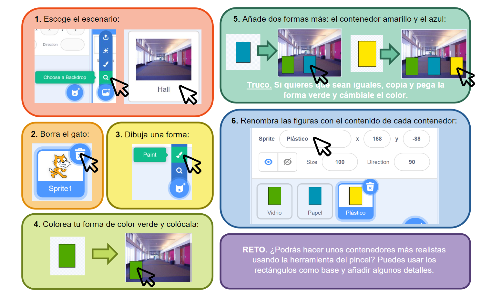
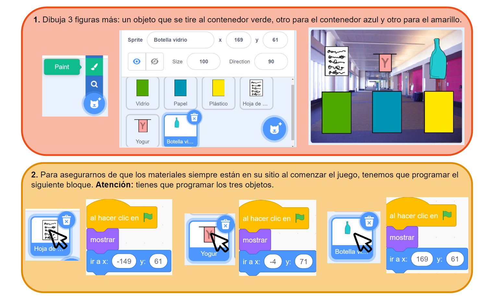
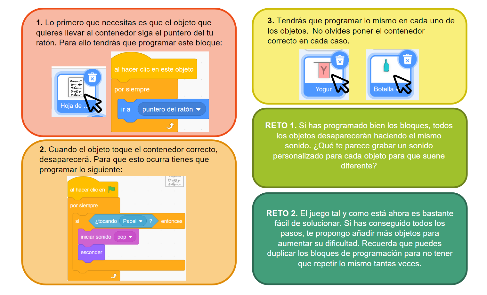
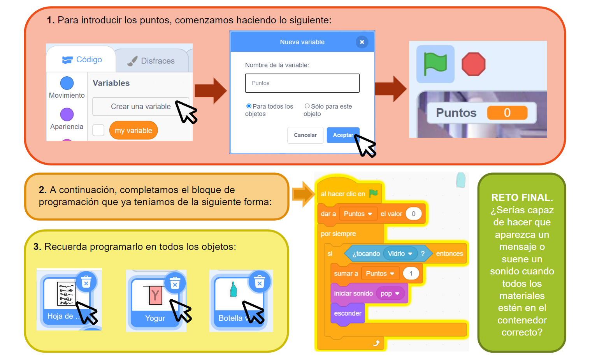

Si lo deseáis, para completar vuestra historia interactiva, podéis crear un juego que conciencie sobre la importancia de la reutilización y el reciclaje. Dicho juego puede estar integrado en vuestra historia o bien podéis crear un proyecto aparte. A modo de ejemplo, en el siguiente enlace, encontraréis un sencillo juego sobre reciclaje y, a continuación tenéis unas fichas de como se ha programado en Scratch.
Fichas guías para la realización del anterior proyecto en Scratch
I Creamos nuestros contenedores de reciclaje

II Dibujamos los materiales para reciclar y los colocamos

III Clasificamos los materiales en los contenedores

IV Añadimos puntos al juego
